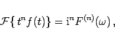
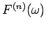
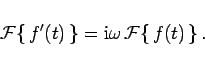

Inhalt Index DeskTop Bronstein

 Integraltransformationen Fourier-Transformation Eigenschaften der Fourier-Transformation Rechenregeln zur Fourier-Transformation
Integraltransformationen Fourier-Transformation Eigenschaften der Fourier-Transformation Rechenregeln zur Fourier-Transformation


|  | (15.88) |
wobei mit  die n-te Ableitung von  bezeichnet ist.
bezeichnet ist.
|  | (15.89a) |
 |
(15.89b) |
Diese Differentiationsregeln werden bei der Lösung von Differentialgleichungen angewendet.